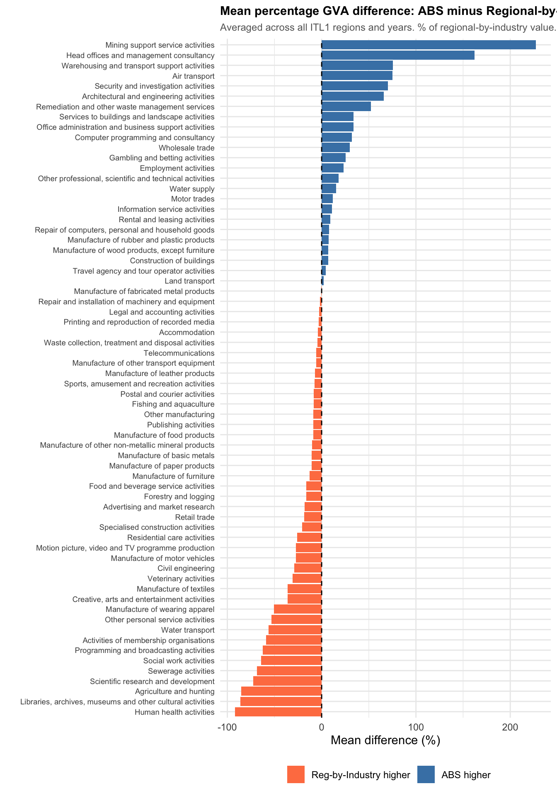
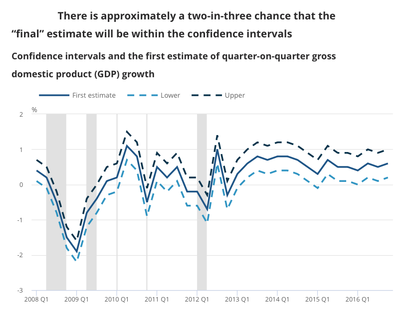
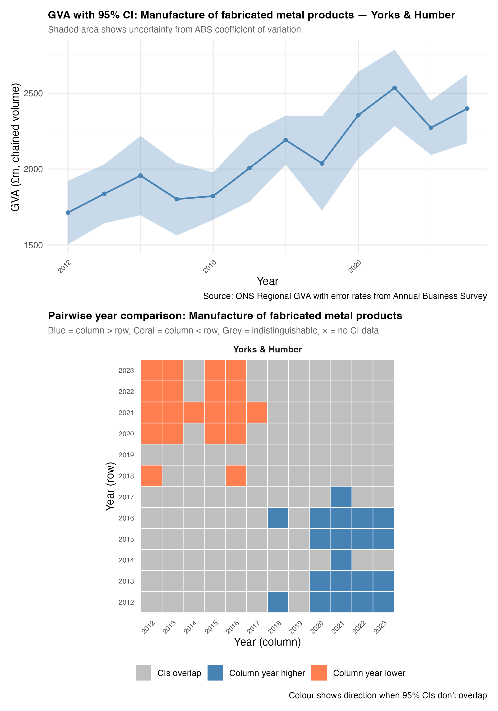
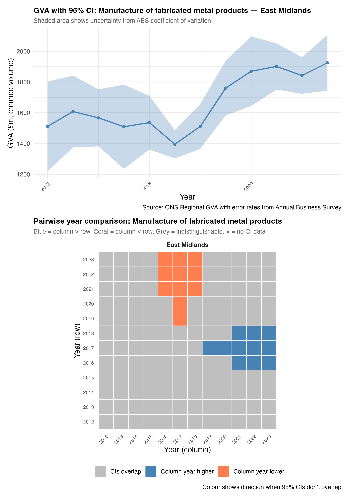
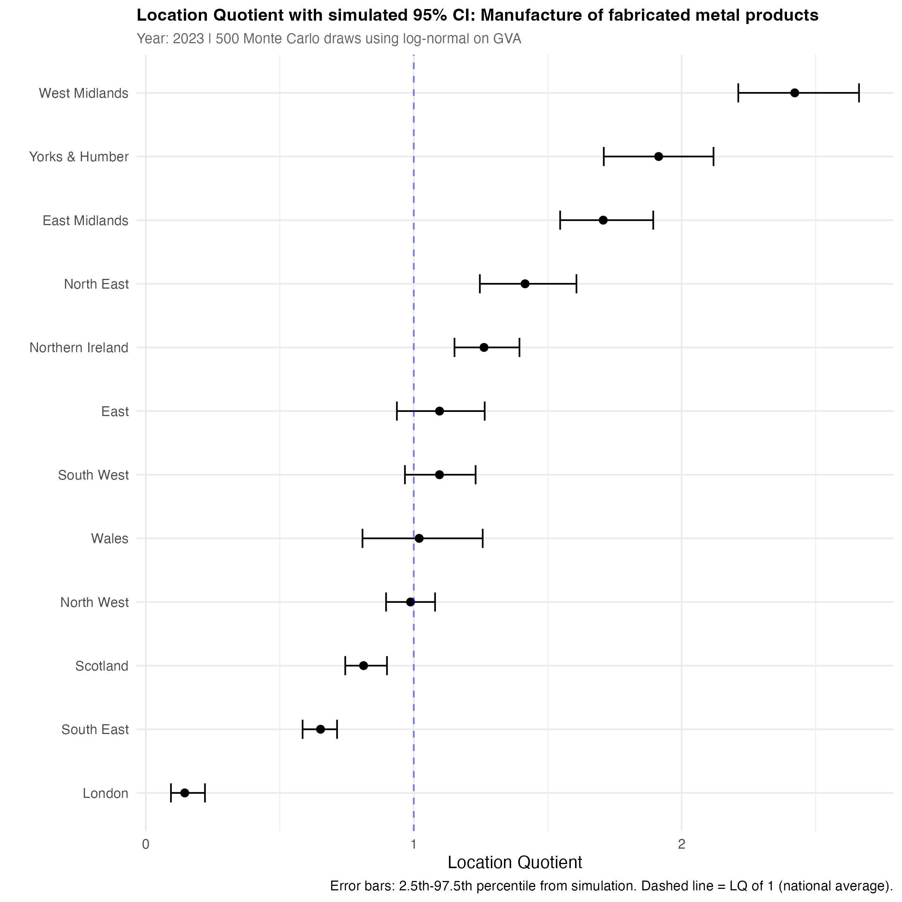

Why adding uncertainty into regional GVA is a good thing
Headlines
Far from just introducing less precision, including uncertainty in regional economic data leads to quite different, useful ways of thinking about regions, grounded in what we do and don’t know. It becomes possible to filter signal from noise.
This is not standard practice mostly due to the constrictions of the System of National Accounts (globally agreed so extremely slow to change) (Coyle 2014). But it is not an either/or situation. Accounts’ single point data and error-bar approaches can both be used.
This report applies UK Annual Business Survey uncertainty rates to region-by-industry GVA data to explore what the impact of uncertainty could be.
It argues uncertainty is powerful because it short-circuits many unhelpful ways of thinking about growth and industrial strategy, including spurious ranks.
This first piece asks questions about what this might mean for regional economic thinking, with the aim of putting feedback and other work into a follow up article for the same project.
Resources/links
I have prepared two interactive web pages for each of the GVA sources discussed below. I’ll refer back to these with links.
Chained volume GVA: What is the growth signal if error rates are included in regional data?
Current prices GVA: What happens to location quotients if error rates are included?
The repository for this project is here. This includes all code (which mostly downloads data directly to be processed) and writing, as well as a record of any Claude-Code conversations used in development. See this draft set of guidelines on how to clearly keep one’s own work separable from LLM use, treating it no differently to any other source (with some complications). A section at the end explains how LLMs were (minimally) used in this article and points to other sources outlining how they were (more extensively) used in code production.
Introduction: how to avoid chasing vampires off cliff edges
In the movie ‘The Lost Boys’, David and his west-coast vampire buddies race motorbikes across a misty landscape. Michael (as yet unaware of the blood-drinking habits of his new associates) tries to keep up with them. David eggs Michael on - but then Michael spots the faint beam of a lighthouse, puts two and two together and barely avoids hurtling over a cliff edge.
One might say David was claiming ‘incredible certitude’ (Manski 2020) about the cliff’s location. “Don’t worry Micheal, there’s no cliff. Why would I be racing you otherwise? It’s miles away. Definitely.”
Had Michael not seen the lighthouse through the fog, he may have made a type II error, believed David’s false negative - “no cliff here” - and raced on. (See Table 1 for a full type I / II error breakdown.)
If there’s fog, what you do about that depends on what you think is going on and what else you feel certain about. But the fog itself is information. Without David’s certitude, Michael would do the the same as the rest of us - slow down and check his surroundings.
I am of course going to apply this clunky metaphor to regional economic policy. Decisions are being constantly made on the basis of David-level certitude. But what are the implications of that for how we steer through the economic fog? And what would the implications be if we took the fog seriously?
The issue is already well-explored (see below), but there has been little attempt to measure the fog and think through its policy effects at regional level. This is especially vexatious for place-based policies including trying to get a solid grip on industrial strategy. As devolution deepens, the problems will only multiply. We need to better understand what we do and don’t know, and what that means for aligning choices.
Reasons this hasn’t happened so far usually come down to the complexity of identifying uncertainty in a national accounts framework. It’s true that the scale of the task is intimidating and onerous. But we don’t have to jump straight in at the deep end. Here, I argue it’s useful to explore the implications using some plausible, evidence-based ‘if/then’ scenarios about regional economic uncertainty. From that, it should be possible to iteratively explore policy implications.
In this opening piece, I lay out the problem with ‘incredible certitude’ (as others have done before) and then present two examples of what applying uncertainty to regional GVA data could look like.
I then ask some questions about what the policy and decision-making implications could be. I will leave those open to try and get feedback for the next chunk of this work, where I hope to flesh out how much difference uncertainty could make. I’ll save some ‘decision-making under uncertainty’ sources for that section.
Introducing uncertainty doesn’t have to mean losing information. In fact it can be the reverse - revealing genuine signal in the noise, like a lighthouse in fog.
A quick note on attitude
A few words on the spirit of this work, going back to a point I was mulling back in 2018 about how we should approach criticism of economic ideas. I’ve just been re-reading a 2023 post by Richard Murphy about imputed rent (the rent that would be paid if owner-occupier houses were rented). The post starts with a GOTCHA claim: imputed rent isn’t real! “10% of GDP is made up – it simply does not exist in the real world”. Just another example, he says, showing how ridiculous national accounts are.
A commenter replies:
I really do wish you’d dial back the language a bit! GDP are an honest attempt to do something that is conceptually and technically very difficult – and there are honest debates about what to include and what not to include.
I want to keep myself firmly grounded in that respect for work done by much smarter people than me, in the ONS and other places, often under extreme pressure (see example below). The ONS has come under immense pressure, while doing phenomenal work with less money and a much harder survey landscape.
Getting away from perfect sums
National accounts are just that - national - and issues arise straight away from re-purposing those tools for subnational thinking.
Certitude is built into the system of national accounts. Like all accounts, everything has to sum correctly - the ledger of inputs and outputs must all balance exactly. It’s a powerful, mature system that has grown to become part of global governance structures. As the latest SNA (2025 front page says, the goal is to:
“… ensure the compilation of internationally comparable national accounts statistics according to best practice and in a consistent way, allowing policy makers to benchmark their economies.”
Methods to produce these accounts are focused at nation-level. As a result, estimating output for sub-regions is usually secondary, and usually a top-down process. This is the case for UK sub-regional data. As the ONS say in their breakdown of “observed/estimated/modelled components of regional GVA”:
“Each of the components used in the measurement of regional gross value added (GVA) starts with a value for the UK as a whole, which is taken from the latest UK National Accounts Blue Book dataset. We then use the most appropriate available regional indicator to allocate the national total to parts of the UK, in a top-down hierarchical process. In this way we ensure that all of the regions sum to the published UK total and all sub-regions sum to their respective region total.”
So this top down approach is an unavoidable outcome of the accounting framework it is part of. The ONS use “hundreds of input datasets to represent individual components of GVA” to achieve this accounting balance - in a separate regional GVA methods quality document, they say of this:
“The complex process by which GVA estimates are produced means that it is not currently possible to define the accuracy of the estimates… for example, through their standard errors. Therefore, the reliability of the estimates is measured by the extent of revisions.”
It isn’t the complexity that makes uncertainty estimates impossible, though. ONS statisticians would have no problems navigating that challenge. Again - it’s the accounting framework they are working in. Outside of that framework, it would be quite possible to examine what error rates were like in any administration or survey sources. For regional data, it wouldn’t have to be an either/or - national accounts approaches could sit alongside more bottom-up analyses that include uncertainty and have no need to artificially ‘balance’.
Why does this matter? Because policy action is taken on the basis of this certitude. Coyle (2017) digs into this issue (open PDF here), discussing the long history of the tiniest GPD shifts having huge political effects. Here’s a recent example from November 2025. The UK grew by exactly 0.1% in the three months to November 2025. An earlier 0.1% contraction led to predictably mature responses in the press (BBC example), with the shadow chancellor accusing the government of having “misled the British public” over what is almost certainly statistical noise.
Coyle explains the trap we’ve found ourselves in: accounting certainty and political demand for precision (however spurious) keeps us stuck here. But as she says:
“… neither the degree of underlying uncertainty nor the everyday practice of ignoring it seems sustainable, even though this situation has lasted for decades.” (Coyle 2017, p.228)
Attempts have been made to move away from this spurious precision. The ONS has experimented with some uncertainty, but it isn’t from the data itself. It takes this form: “How much have revisions to official numbers moved in the past? What bounds does that imply?” Figure 1 is an example of their answer (source). But this doesn’t include any actual sample error. Work has also been done recently on public perceptions of national GDP uncertainty (Galvão and Mitchell 2024).

GVA at sub-regional level, however, throws up other sets of problems that make spurious accuracy potentially more troublesome. Local and mayoral authorities don’t get national-level data support and resources. UK level economic data works at the level it was made for. So when regions are attempting to implement devolved policy - and especially if they’ve been tasked with driving national industrial strategy at a local level - spurious accuracy leads to potentially following-vampire-over-cliff levels of decision problems.
Adding error rates helps because it short-circuits many unhelpful ways of thinking about growth and industrial strategy. Applying national accounts level methods lends itself to making ranks of places and perceiving regional economics as a who’s up / who’s down competition for position (a problem Prof. Richard Harris has pointed out also happens in university rankings, where he shows it is equally as spurious).
This competitive view has deep roots in national accounts approaches, originating as they do in managing wartime economies. They were later used by the CIA to model the U.S/ Soviet economies as part of Cold War strategy, where the stakes were about as high as they could be: proving which economic model would be victorious.
Having a certain grip on uncertainty short-circuits all of this, as it makes horse-race thinking much more difficult, and points policy toward iterative, slow-test improvements based on a whole range of sources beyond just uncertain data.
Making a data-driven guess about the level of regional GVA uncertainty
This section presents the method and results for making a data-driven educated guess at the level of uncertainty in UK regional-by-sector GVA numbers. The ONS region by industry GVA data is used for the central estimate output numbers.
The Annual Business Survey (ABS) is used to get uncertainty numbers. It is an ideal source for reasonable confidence bounds around regional/sectoral GVA data. It is designed to capture sectoral and regional GVA at a reasonable resolution, and - for the sectors it covers - gets its data direct from firms. It can be matched directly against the region by industry data’s ITL1 geographies and most 2-digit sectors.
The ABS is also the most important input into regional GVA numbers. As the ONS say in their fascinating breakdown (if you’re into that kind of thing) of “observed/estimated/modelled components of regional GVA”:
“Of all the data sources used in regional GVA, the ABS has the greatest overall impact, representing around 71% of GVA(P) and 22% of GVA(I)… It includes elements corresponding to all three of the categories of data we wish to analyse: directly collected from businesses operating in a single region; weighted to represent non-sampled businesses; and apportioned to regions from UK-wide company information.”
Using the ABS means there is much less reliance on some of the more heroic assumptions that go into other aspects of regional GVA - though it isn’t without its own assumptions, a key one being that, for firms with multiple sites across regions, GVA is allocated in proportion to site employment count geographically. But it is still survey-based, making it a perfect source for this section’s question: if the regional GVA data had the same error rates as the ABS, what would it look like and what would the implications for analysis and policy be?
It is important to note, though, that single-point GVA values in the ABS versus the region-by-industry GVA can be quite different. Figure 5 summarises the average percent difference per sector between these two data sources (where single-sector matches exist). This figure is a visual reflection of the differences arising from the top-down national accounts balancing process, compared to survey data, and the complexity the ONS cite as the barrier to ever including error rates.
(Some sectors are more easily explainable than others, especially mostly public ones; for example, health is 92% lower in the ABS, as the region-by-industry data includes a proxy for public sector output, where GVA is assumed to be just regional job count multiplied by average wage, balanced against national totals).
Why graft the uncertainty from the ABS onto the region-by-industry data, then, rather than just examine ABS GVA? In order to carry out an ‘if/then’ exercise that lets us compare to the GVA numbers we already use for policy analysis, and ask how uncertainty could change their meaning.
Is this a valid exercise? I”m arguing yes, on the basis of two things. First, there is definitely uncertainty in the GVA data. An educated guess at error rates may be smaller or larger than the true uncertainty, but including it is very likely more accurate than the alternative - working with the point data as if it was the single true value.
Second, seeing what difference error makes - even if there’s error in our error - leads to quite different ways of thinking about regional economies and policy. This goes back to the ‘chasing vampires off cliffs’ point. Introducing uncertainty provides a chance to explore its implications. Incredible certitude cuts off that chance, and as mentioned lends itself to horse-race / rank style thinking that may be - and I think probably is - serving us poorly.
Another argument against doing this would be straightforwardly methodological, and that has two parts. First, the statistical approach used here is too basic. I’d argue that’s fine for this stage, where the goal is to explore what uncertainty might mean for regional policy. If the principle stands, the statistics can always be improved. As already mentioned, the ONS itself has a wealth of expertise that could achieve this, alongside partners testing the role of uncertainty in policy.
Second, this approach does nothing to draw on the complexity of national accounts production. That is part of the point, however. If including uncertainty is useful, it should be possible to refine our understanding of that uncertainty, including other sources used in national accounts balancing if useful. But the task is not to try and re-create national accounts approaches, which have very different purposes. If we want to know what the landscape of regional output really is, that may require its own approach.
Using the Annual Business Survey
The publically available ABS sources are broken into the central estimate data and error data1 giving GVA values and standard errors at ITL1 geography level and 2-digit SIC sectors. Here, I convert GVA and standard errors from the ABS to coefficients of variation (proportion of error) and then apply them to the regional/sectoral GVA national accounts data at the same geogaphical scale, and where sectors are present in both sources.
The region-by-industry GVA data uses bespoke groupings of SIC sectors (different groupings for each geography level, to keep to disclosure requirements). The ABS has single-digit SICs, for those sectors in the survey. In order to match the small number of grouped sectors to the ABS, each sector group (such as SIC sectors 5 to 8, covering four of the five mining/quarrying/fossil fuels sectors in SIC section B) is used to get an average coefficient of variation, weighted by the sector’s GVA value from the ABS. There are 73 sectorsthat match once ABS sector categories are processed to match. Only years available across both sources are used - 2012 to 2023.
Below, I’ll explore the implications of these error rates when applied both available types of regional GVA data:
- Chained volume (CV) data that aims to capture ‘real’ output changes over time. From these, we can ask, “Did this sector grow or shrink in this place?” (Later, we can do a few other things e.g. was its growth slope really steeper than other places?)
- Current prices (CP) data, which (being prices as they were in the year they were counted) can be summed, and used to calculate location quotients (LQs) - how concentrated a sector is in each place. This provides a good sense of the how the UK’s economic structure changes. We’ll have a go at adding error rates to LQs.
Chained volume GVA: growth over time
Chained volume (CV) data is used to assess real economic change over time, accounting for inflation and quality changes in goods and services. The ONS calculate separate deflators for each sector within each region, with a single year set as the point where the chained volume and ‘prices that year’ amounts are the same. Other years are adjusted relative to that, for each sector/place combination. (As a result, each sector/place time series must be treated separately and -unlike the current prices data - cannot be summed.)
This section asks how much the growth signal changes for individual sectors in specific ITL1s if error rates are included.
This interactive web page provides a way to look at the results, for individual sectors across all twelve ITL1 zones.
The inclusion of error rates immediately makes it very rare for year-to-year changes to be distinguishable from zero, if looking at individual 2-digit SIC sectors in specific ITL1 zones. So instead, what each grid plot does is compare each year to every other year, to show where each is clearly separable.
The assumptions used (on top of the if/then above) are: 95% confidence intervals, and assuming that GVA change isn’t clearly present if the possible minimum from one year is lower than the possible maximum from another year (and vice versa). This is a conservative assumption that the true value2 could be at both confidence extremes between timepoints.
Let’s talk through the default sector in the interactive, fabricated metals, to make more sense of that. Consider the example in Figure 2 (you can see the same data in the interactive by hovering over Yorkshire and Humber to see its growth over time). What this shows:
Blue squares in the grid indicate that the column year was clearly higher than the row year it is compared to (‘clearly’ meaning, as described above, 95% mins and maxes don’t overlap).
We can see that 2020 to 2023 are clearly higher than the earlier years in the data, from 2012 to 2016, though the high peak in 2021 is the only year consistently separable from others. 2020 to 2023 are years where the confidence interval minimum is separable from the earlier CI maxima.
The rest of the grey area is showing that, for the first half of the data from 2012 to 2017 - on the assumptions we have here - no clear growth signal is coming through.
Note, the grid is mirrored along the diagonal. So orange squares are showing the same thing in reverse - earlier column years are clearly lower than some later ones.

Looking on the interactive, Scotland shows the opposite pattern, which can be seen from its growth slope in the interactive clearly too - bottom left orange squares indicate clearly lower values in the later part of the data.
Figure 3 shows fabricated metals in the East Midlands. While the later value increases appear separable from the low point around 2017, it can’t be so easily distinguished from where it was from 2012 to 2016, despite the central estimates looking higher (they could well have been higher in the earlier period and lower in the later one). That is, recent apparent growth could just be a return to the pre-Brexit status quo, not a step change. The difference to Figure 2 is mainly driven by East Midland’s larger standard errors - the underlying GVA data is more uncertain in the ABS. Other sources could be explored to triangulate. Have job numbers risen, for instance? What is known about any productivity changes in the sector here?
Several other ITLs for fabricated metals in the interactive are purely grey. Looking at any of those shows combinations of wide error rates and fairly flat change over time, considering the range of those confidence intervals. The apparent drop in the North West after 2017, for example, isn’t clearly separable, though it looks strong. Again, other sources could help support or question that apparent change.

Within this way of looking, the data signal of the COVID19 pandemic comes straight through for land transport (view on interactive page), as it does for accommodation (here) and food services (here). Other sectors where one might expect a pandemic impact (arts/entertainment and museums/culture) are short on data. Mid-pandemic drops show up as an orange ‘column year lower than most other years’ band. London stands out as the one place that hasn’t yet seen bounced back to its pre-pandemic state, remaining significantly lower than other ITL1s.
Current prices GVA: location quotients
Location quotients (LQs) are an intuitive way to assess the relative strength of sectors in regions. An LQ is the ratio of a sector’s proportion of a region’s whole economy versus that sector’s proportion of the UK as a whole. If, say, fabricated metals is 20% of a sub-region’s GVA but only 10% nationally, it is twice as concentrated - the LQ is two3.
Current price (CP) GVA data can be used for LQs because (unlike CV) it can be summed, as it is just the money value of each sector’s output recorded in that year. CP data can’t show real growth over time, but it can be used to examine economic structural change - how much a sector/place combination has relatively grown in concentration (which could be due to nominal growth in that sector, or other sectors increasing in value faster).
LQs are (in theory) perfect for thinking about regional specialisms, and for comparison and ranking, making them an obvious fit for industrial strategy thinking. But they also carry the “single accurate value” issue over from the underlying GVA data.
Including error rates around an LQ is trickier than for direct GVA because it is a derived value - it doesn’t make sense to apply confidence intervals to an LQ directly. The solution used here is to simulate what the range of the underlying GVA values could be using applied uncertainty, and then calculate LQs based on those simulated values.
Each simulation pulls a sample from a normally distributed range based on the standard errors applied from the ABS, adjusted to make sure no negative values arise as these could break the LQ formula. This is then repeated 500 times to produce a range of possible LQs.
Here is the interactive page for looking at the results, starting again with fabricated metals. There are LQs for each ITL1, including 95% confidence intervals (see also Figure 4). Considering overlapping error rates, East and West Midlands and Yorkshire & the Humber might be seen as one ‘high concentration’ group not really separable from each other, with London and the South East separately at the ‘low concentration’ end. West Midlands also appears to have clearly the highest concentration. Other ITL1s are not so separable, and four have error bars crossing zero - if these are reasonable, there is no way to say if fabricated metals is more or less concentrated than the UK average.

The plot also has an option to compare LQs across five years, between 2017 and 2023. Overlapping error bars suggest the LQ for fabricated metals may not have significantly changed between those year in many places. The East Midlands (real LQ increase), Scotland and the South East (a plausible decrease in both) do suggest genuine structural change over time.
Highlighting some differences between single point estimates and with uncertainty
This is a brief section that picks a few example sectors and looks at their LQs. It compares the single-point values (the centre dots in the visualisations, which is the data we’d have without any uncertainty) to how introducing error bars may change the findings.
I don’t attempt any policy implication statements based on that. See the final section - that is left open for the follow up report, after an attempt to get feedback on this piece.
Before three examples, note what difference the overall error rate can make. Some sectors have very high uncertainty, present in the ABS. The error rates for construction of buildings, for example, make it clear that any single-point differences need treating with much caution. only the North East (relative growth) and London (shrinking) appear to have a clear signal. This is also true for food services - huge uncertainty here (seen also in the CV data) also suggests being careful with claims about the service economy from this data.
Error bars for sectors like arts/entertainment show uncertainty varying a lot across ITL1s. Clearly there is better ABS data for Wales, the North East and Northern Ireland. Elsewhere, many places are not distinguishable from the UK average concentration. London is also quite uncertain but because it’s so concentrated, it’s easy to separate.
Here’s a quick run-through comparing findings if considering just single point data versus with uncertainty.
- Architecture and engineering activities:
- Single points: East Midlands, the North East and Scotland seem to have lost a lot of concentration over time, while West Midlands, Wales and South West appear to have seen relative growth.
- With uncertainty: East Midlands earlier error range makes recent changes difficult to separate; nothing may have changed. Wales’ uncertainty is strong in both time periods. The drop in the North East seems large but can’t be separated clearly - can we find any other sources to clarify? The only clear stand-out is still Scotland, with what looks like definite relative growth.
- Computer programming/consultancy:
- Single points: a split between places where the sector has relatively grown - North East, Yorkshire/Humber, Northern Ireland and London - with shrinkage in the South West, North West, Scotland, West Midlands, the East of England and the South East.
- With uncertainty: the only clear signals are definite relative shrinkage in the South West and strong growth in London. Uncertainty is especially strong in the East Midlands and East of England.
- Telecommunications:
- A sector, similar to Information service activities, that has benefited from some more direct firm data, and this shows in the smaller error bars. It is still a different set of stories for single point data versus with uncertainty.
- Single points: London, Northern Ireland, East England, East Midlands and the North East have relatively shrunk; many other places have grown.
- With uncertainty: only Northern Ireland’s shrinkage has a clear signal. Growth signal is also clear only in Scotland, the South West and the West Midlands.
Discussion and next steps
This end discussion covers two things:
- What the next step - thinking through implications for regional economic policy - might look like. That includes asking some open questions.
- What else could be done to add uncertainty to economic data.
Next step: what are the implications for regional economic thinking if we take uncertainty seriously?
How might it change what we do? There are two aspects to this. One: examining how more uncertain data differs to the single-point data and discussing what that could mean. Implications will be best tested at the point decisions are being mulled, including current industrial strategy choices. It is less theoretical, but more iterative and test/learn-oriented.
The three examples included above could be one way of exploring these implications. If these are the differences between single-point and uncertain estimates, what could that mean for thinking through where regional economies really are?
Two: there is a vast body of theoretical work to consider with a “planning under conditions of deep uncertainty” Haasnoot et al. (2013) heading. Game-theoretic ideas, Manski’s application of minimax regret Stoye (2012), a full dive into cybernetic thinking, trying to comprehend decision-making as algedonic (pain/pleasure) signals in a viable system.
Let’s return to the ‘avoid chasing vampires off cliffs’ idea. This ‘be afraid of type II errors’ approach is embodied in the precuationary principle: “extra precaution is justified when false negatives are worse than false positives” Persson (2016). But it’s not always that way round - an issue that signal detection theory attempts to grapple with (see e.g. Simchon et al. (2026)) - as it says here, we are trying to detect the signal in the noise and then act appropriately. The potential damage depends on if we think cliff edges are ahead, or if we unnecessarily travel at a snail’s pace or go in an entirely wrong direction.
Choices are never binary in the way that type I/II thinking encourages, however. Michael was making constant steering decisions as he proceeded - initially on a ‘no cliff ahead’ basis until new lighthouse information arrived. This has to be part of the thinking - how to use uncertain data to steer? That does raise cybernetic ideas again, but any theoretical ideas are probably most valuable inside a test/learning context, not set in stone beforehand.
We’ve had false positives from spuriously accurate data where there were actual errors, both of the ranking type: “this city is the UK’s number one for growth” and “this region is the UK’s number one advanced cluster for x.”
The issue might not be that the ranking was wrong, but that this kind of thinking is fundamentally unproductive. As we can see above, where it’s possible to detect signal in the noise, that is useful. But where fog remains, that points policy back towards the region itself, and what we concretely know about it - without having to enter into horse-race thinking. We know exactly which firms are here. We can know (from sources like Companies House) what much of the job picture is. We can sense-check quantitative data findings against deep local expertise, to build a much richer picture, and develop partnerships using that.
If we drop the statistically unnatural need for everything to sum, how far can we get with a bottom-up, grounded-data version of economic reality? Again not either or.
Possible further uncertainty if… thens
Possible extensions to adding uncertainty to GVA and other economic data could include:
Applying the same methods to lower geographies like ITL2 and 3 would require making assumptions about sample size, but - in the same spirit of if/then - that would be entirely doable, and could be simply applied through the sample-to-standard error conversion. It is one extra estimation step away from the work above though (as it would be if we combined sectors).
Chained volume data could be used to compare different places to each other. For example, it should be possible to estimate how much more uncertain growth slopes (‘compound annual growth rates’ i.e. putting straight lines through change over time) could be. This would allow the equivalent question to be answered: “Has this sector in this place really grown more than elsewhere?” (This would build on the ‘significance of growth slopes’ work I have already done e.g. here, but that just uses standard OLS error rates sometimes with Newey West applied).
Error values are supplied for hours worked from the annual population survey. Combined with the GVA numbers, it would be possible to place uncertainty on productivity numbers.
Using other sources to estimate uncertainty in job counts. There’s BRES, and also Companies House data - the latter with very large ‘sample sizes’.
Sensitivity testing around assumptions. There are no single ‘correct’ answers. The approach above can pull out very clearly strong growth signals, but one could explore less conservative assumptions and compare to other sources. We could also use other statistical methods - for example, there is likely information in the correlation between timepoints in Figure 3’s latter high values that could change the picture.
LLM use
In this article:
- Claude code added the LQ formula and the lines from “where GVA…” to “below 1, less so” in Current prices GVA: location quotients.
- ChatGPT made Table 1 for me, from this prompt. I tweaked some of the text. “Consider the following two bits of text. (1)”Never confuse Type I and II errors again: Just remember that the Boy Who Cried Wolf caused both Type I & II errors, in that order. First everyone believed there was a wolf, when there wasn’t. Next they believed there was no wolf, when there was. Substitute “effect” for “wolf” and you’re done.” And (2) “In the movie ‘The Lost Boys’, David and his west-coast vampire buddies race motorbikes across a foggy landscape. Michael (unaware of the blood-drinking habits of his new associates) tries to keep up with them. They egg him on - but then he spots the faint beam of a lighthouse, puts two and two together and barely avoids hurtling over a cliff edge. One might say David was claiming ‘incredible certitude’ (Manski) about the cliff’s location.”Don’t worry Micheal, it’s definitely, definitely miles from here.” Can you (1) put the lost boys quote in a type1/2 error context for me? And (2) search for other online sources/links that discuss examples of uncertainty and ‘incredible certitude’ and their implications?”
In this project as whole:
The main R code script here has sections clearly marked where Claude Code (CC) was used to output code, mostly for visualisations.
CC was used to output the two HTML/Javascript interactives, built around saved images. The prompt back-and-forth for that process is here.
CC drafted a first version of the project folder structure that I then tweaked. That built on this source-synthesis from CC on ‘modular open publishing workflow’.
There is a CC-drafted source summary exploring why the ABI and region-by-industry GVA values differ here.
Appendix
Table: Lost Boys cliff scene in type I / II terms
Figure: GVA from the ABS versus GVA from the ONS region-by-industry data, average percent difference
References
Coyle, Diane. 2014. GDP: A Brief but Affectionate History. Princeton University Press.
———. 2017. “The Future of the National Accounts: Statistics and the Democratic Conversation.” Review of Income and Wealth 63 (s2): S223–37. https://doi.org/10.1111/roiw.12333.
Galvão, Ana Beatriz, and James Mitchell. 2024. “Communicating Data Uncertainty: Multiwave Experimental Evidence for UK GDP.” Journal of Money, Credit and Banking 56 (1): 81–114. https://doi.org/10.1111/jmcb.13044.
Haasnoot, Marjolijn, Jan H. Kwakkel, Warren E. Walker, and Judith ter Maat. 2013. “Dynamic Adaptive Policy Pathways: A Method for Crafting Robust Decisions for a Deeply Uncertain World.” Global Environmental Change 23 (2): 485–98. https://doi.org/10.1016/j.gloenvcha.2012.12.006.
Manski, Charles F. 2020. “The lure of incredible certitude.” Economics and philosophy 36 (2): 216245. https://doi.org/10.1017/S0266267119000105.
Persson, Erik. 2016. “What Are the Core Ideas Behind the Precautionary Principle?” Science of The Total Environment 557-558 (July): 134–41. https://doi.org/10.1016/j.scitotenv.2016.03.034.
Simchon, Almog, Tomer Zipori, Louis Teitelbaum, Stephan Lewandowsky, and Sander van der Linden. 2026. “A Signal Detection Theory Meta-Analysis of Psychological Inoculation Against Misinformation.” Current Opinion in Psychology 67 (February): 102194. https://doi.org/10.1016/j.copsyc.2025.102194.
Stoye, Jörg. 2012. “Minimax Regret Treatment Choice with Covariates or with Limited Validity of Experiments.” Journal of Econometrics, Annals issue on “identification and decisions,” in honor of chuck manski’s 60th birthday, 166 (1): 138–56. https://doi.org/10.1016/j.jeconom.2011.06.012.
Footnotes
code/comments here run through combining those two sources. A final joined CSV is here, to save others the pain, though it’s just for GVA, not every ABS value.↩︎
‘True value’ being used as shorthand for the cumbersome ‘95% confidence interval would contain the true value 95% of the time if the survey sample was taken again’. [ONS source…]↩︎
Because (A/B)/(C/D) is equivalent to (A/C)/(B/D), the LQ actually captures two related ways of seeing the same thing: how relatively concentrated sectors are across a whole geography like the UK, and how concentrated within a subgeography like South Yorkshire they are. (See the desciption and table in the ONS’ older LQ document.)↩︎